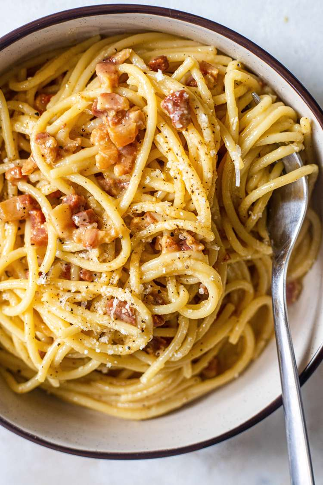

Carbonara Recipe
Homepage

My Trick for Creamy Carbonara
Ingredients
- 1 tablespoon extra virgin olive oil or unsalted butter
- 1/2 pound pancetta or thick cut bacon, diced
- 1 to 2 garlic cloves, minced, about 1 teaspoon (optional)
- 3 to 4 whole eggs
- 1 cup grated Parmesan or pecorino cheese
- 1 pound spaghetti (or bucatini or fettuccine)
- Kosher Salt
Steps
- Put a large pot of salted water on to boil (1 tablespoon salt for every 2 quarts of water.)
- While the water is coming to a boil, heat the olive oil or butter in a large sauté pan over medium heat. Add the bacon or pancetta and cook slowly until crispy.
- In a small bowl, beat the eggs and mix in about half of the cheese.